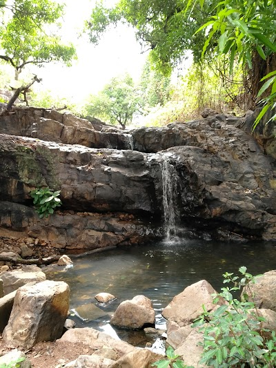
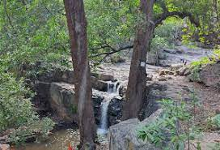

Somnath Falls
Somnath Waterfalls
Somnath, Mul, Chandrapur is a well-known tourist place around Chandrapur district. Amtepharm is located in Somnath, which is run by Baba Amthe for leprotic patients.
About

Somnath Prakalp is a small Village/hamlet in Mul Taluka in Chandrapur District of Maharashtra State, India. It comes under Somanth Prakalp Panchayath. It belongs to Vidarbh region . It belongs to Nagpur Division . It is located 41 KM towards East from District head quarters Chandrapur. 15 KM from Mul. 841 KM from State capital Mumbai